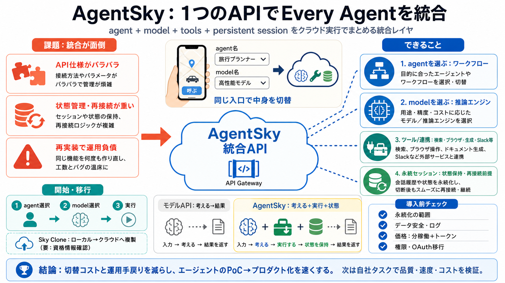

AgentSky — One API, Every Agent
Initial source page

複数のエージェント（Claude Code、Codex、Hermes、pi、DeepSeekなど）とモデルを、1つのAPIの中で切り替えてクラウド実行できる統合レイヤです。
複数のエージェント/モデル/ツール/外部連携を使うと、API仕様の違い、状態管理、再接続、再実装で手戻りが増えます。
Agent切替
SDKや実装がバラバラ / 仕様の再学習
運用負債
永続性・クラッシュ時復帰・状態保持が面倒
目的地や車種（＝agent/model）を選ぶだけで、実走（＝ツール・連携・永続実行）をクラウド側が回してくれるイメージです。 （比喩）
あなた
agent名 / model名 を指定
AgentSky
実行環境・接続・状態を吸収
リクエスト内でagent（例：claude-code）とmodel（例：claude-fable-5）を指定し、同じ呼び出し形式で実行します。
agent（手順/構成）
“どう動くか”の型（ワークフロー）
model（推論エンジン）
“どの頭脳で考えるか”
永続セッション（persistent sessions）が状態を保持し、クラッシュや再接続が“利用者の問題ではない”方向性を打ち出しています。
状態保持
メッセージ間で継続
クラッシュ
再接続を想定
負担軽減
状態管理の手戻りを減らす
※ただし、抜粋では“何がどの範囲で残るか”は具体不足のため、導入前確認が必要です。
検索・ブラウザ・画像/動画生成・文字起こしなどの“組み込みツール”や、Gmail/Notion/Slack/GitHub/Google Drive/Figma等のコネクタを追加できます。
組み込みツール
検索 / ブラウザ / 生成 / 文字起こし
外部コネクタ・送信先
Slack / Telegram / Discord / WhatsApp / 自社API
エージェントとモデルを選ぶところまでを簡素化し、最初のエージェント作成を“3ステップ”で進めるとされています。
i
agentを選択
ii
modelを選択
iii
実行（必要ツール/連携も指定）
狙い
PoCを速く / 再実装を減らす
ローカルで動かしているエージェントをコマンド一つでクラウドへ“複製”し、同じ指示・同じモデル・同じサブスクリプションを引き継ぐと説明されています。
引き継ぐもの
instructions / model / subscription
要追加確認
外部サービス参照 / 資格情報（OAuth等）
全体像は、(1)エージェント選択、(2)モデル選択、(3)同一リクエストで追加するツール/コネクタ/チャネル、(4)分の稼働＋トークン利用の可能性、の理解で掴めます。
i エージェント
実行のやり方（ワークフロー）
ii モデル
推論エンジン
iii 付帯機能
ツール/連携/チャネルを一括指定
iv 料金の型
“分の稼働 + トークン”の見立て
モデルAPIが“推論結果の提供中心”になりがちなのに対し、AgentSkyはツール・コネクタ・チャネル・永続セッションまで含めて“作業を成立させる層”を提供します。
モデルAPI
考える → 結果を返す
AgentSky
考える＋実行（ツール/連携/状態）
ベンチマーク（Agent Arena）で、タスク品質・速度・コストの観点から適切な組み合わせを探す方向性が示されています。
品質
タスク達成度
速度
実行時間の差
コスト
分の稼働＋トークン想定
※前提条件（タスク条件・測定方法）が不明な可能性があるため、自社ワークロードで検証する姿勢が重要です。
永続化の範囲、データ取り扱い、価格の細部、資格情報の持ち込み、セキュリティ/監査などは抜粋だけでは判断できないため確認が必要です。
永続セッション
何が保持されるか / 保存期間 / 削除方法
価格
最小課金 / 丸め / 無料枠 / サブスク連動
データ安全
暗号化・保管場所・ログ・学習利用の有無
Sky Clone
OAuth等の資格情報移行手順
“1つのAPIで統合”を活かすために、(1)必要agent/model/ツール/連携を確定し、(2)データ・権限・料金を検証し、(3)Arena結果と自社タスクを突き合わせます。
i 構成確定
agent / model / 付帯ツール
ii リスク検証
権限・ログ・誤送信対策
iii コスト試算
分稼働＋トークンの実測
iv ベンチ照合
品質/速度/コストの差を評価
AgentSkyは、agent/modelの切替を“同一API体験”にまとめ、永続実行・ツール/連携・チャネルまで面倒を吸収することで、エージェントをプロダクト化しやすくする方向性が見えます。
Initial source page
For most popular models, OpenRouter pricing is at or very close to direct API pricing. The convenience of a single API k…
4.39B tokens Gemini 3.7 Flash is a multimodal model from Google for fast agentic workflows, coding, and complex multi…
| What you are comparing | OpenRouter | A cheaper alternative for coding | --- | Inference markup | None on tokens, bu…
OpenRouter offers 25-33 free models with zero per-token cost. No credit card required. Rate-limited (50 requests per day…
| What you pay for | OpenRouter | Portkey | --- | Pricing model | Usage-based credits | Open-source plus tiered SaaS |…